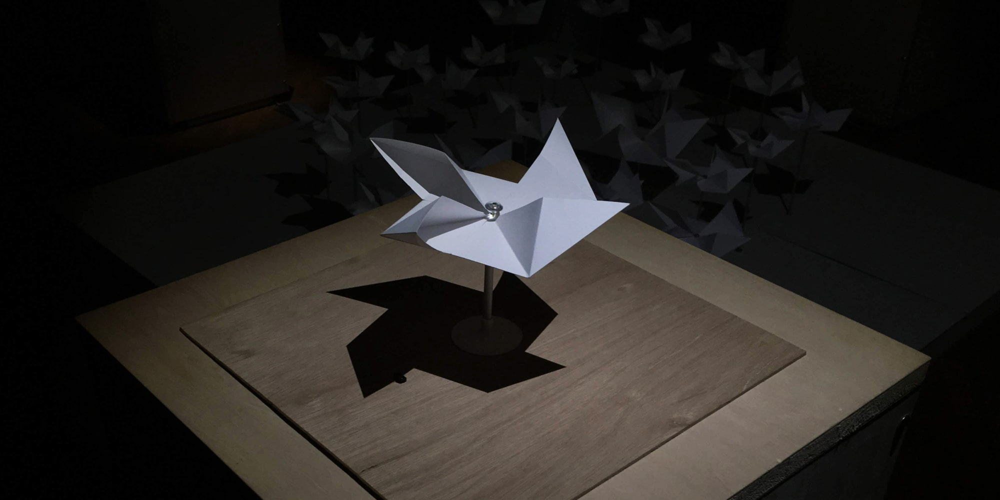
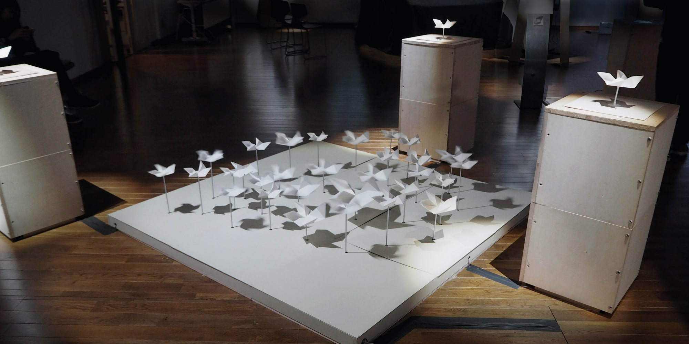
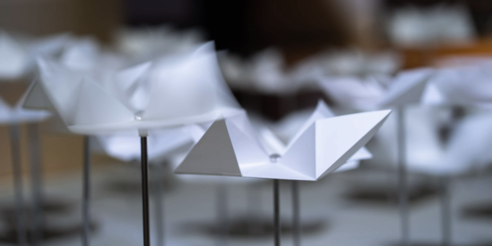
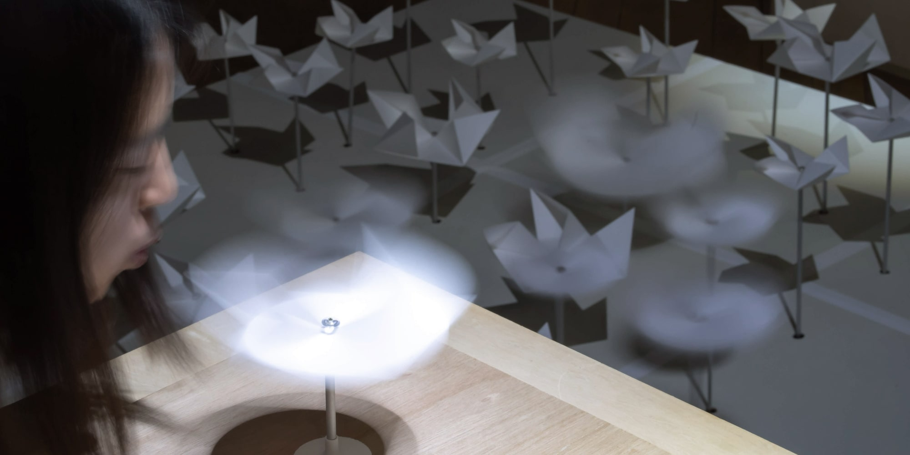
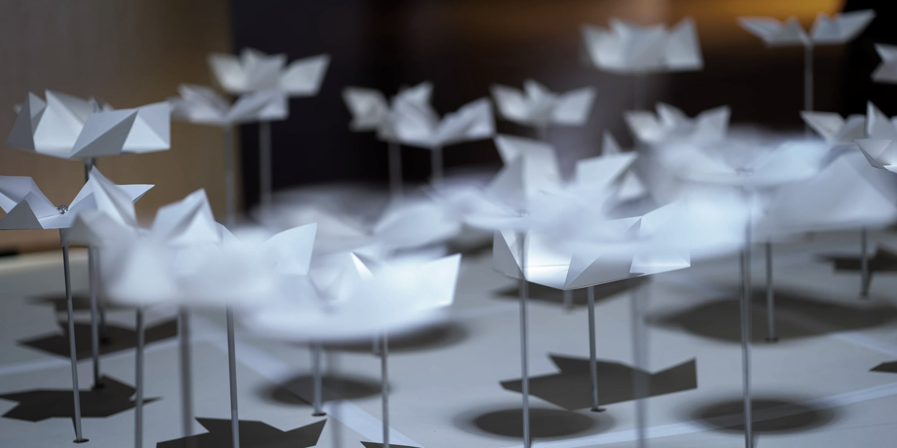

ikiiki
, an installation to create an "rest space" at the moment
One of the meanings of the character, “息(breath)”, is “Rest”. When you feel uneasy or anxious, exhaling deeply or sighing deeply can be a sign that your body needs a break. Ikiiki is a work that aims to let you focus on your breathing and have a moment to refresh your mind and body in the midst of your busy daily life. Ikiiki visualizes breath through pinwheels. Our breath becomes part of the work as an actuator, and pinwheels provide various feedback depending on the length and depth of breathing. As one breath spins a pinwheel, the breath goes on spreading from one pinwheel to another. By putting your thoughts and feelings into your breathing when you blow a pinwheel, I would like you to release your stress, feel the connection, and feel present.
息という文字にはやすむという意味がある。不安な時や緊張する時、深呼吸をした り、ついついため息をついたりするのは体にやすみが必要だから。忙しい毎日の中 で少しでも自分の呼吸に集中し、心も体もスッキリしてほしい、ikiikiはそんな願い から作り始めた作品である。 ikiikiは風車を回すことで見えない息を可視化させている。人々の息はアクチュエー タとして作品の一部になり、その長さや深さによって異なるフィードバックをする 。一つの風車に送り込まれた息は隣へ隣へ繋がり広がって行く。今の思いや感情を 、自らの息に乗せ風車に流し込むことで、リラックスを得たり、繋がりを感じたり 、いきいきとした瞬間が生まれうることを体験してもらいたい。




Credit
Lee Jinyong, Hidemaro Fujinami, Juri Fujii
Skill
Hardware Engineering
Exhibition
iiiExhibition